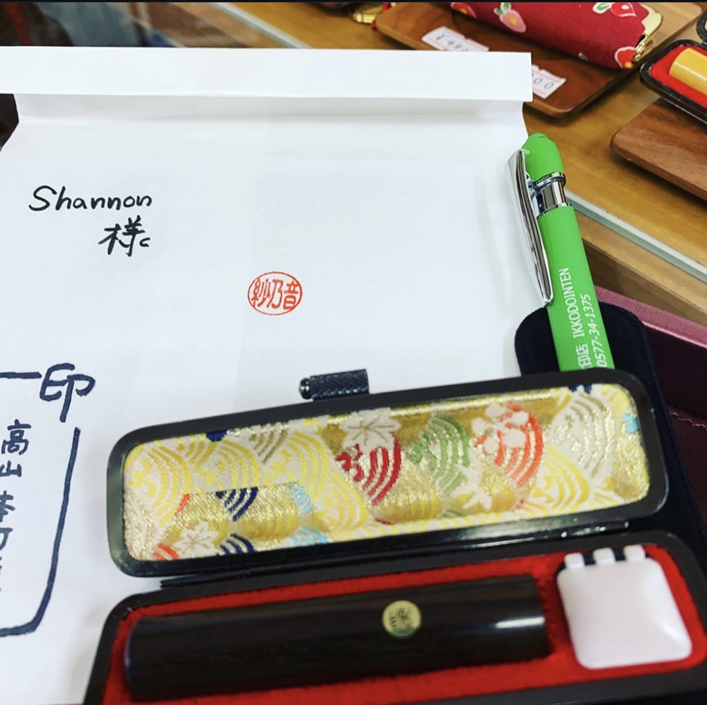

愛
Love
The Kanji 愛 means “love.” It is often used in names to express affection, kindness, and compassion.

Kanji are Japanese characters that each carry their own meaning. The meaning of a name can change depending on which Kanji are chosen.
Each Kanji has a meaning. The meaning can be a correct object (e.g. mountain, tree) or an abstract idea (e.g. love, courage). This is why different Kanji can give your name a unique meaning and impression.

愛
The Kanji 愛 means “love.” It is often used in names to express affection, kindness, and compassion.
勇
The Kanji 勇 means “courage.” It can express strength, bravery, and the ability to face challenges.
光
The Kanji 光 means “light.” It can represent brightness, hope, and a positive future.
Even if two names have similar sounds, the Kanji chosen can give them completely different meanings and impressions. This allows for a more personal and meaningful name.
e.g.